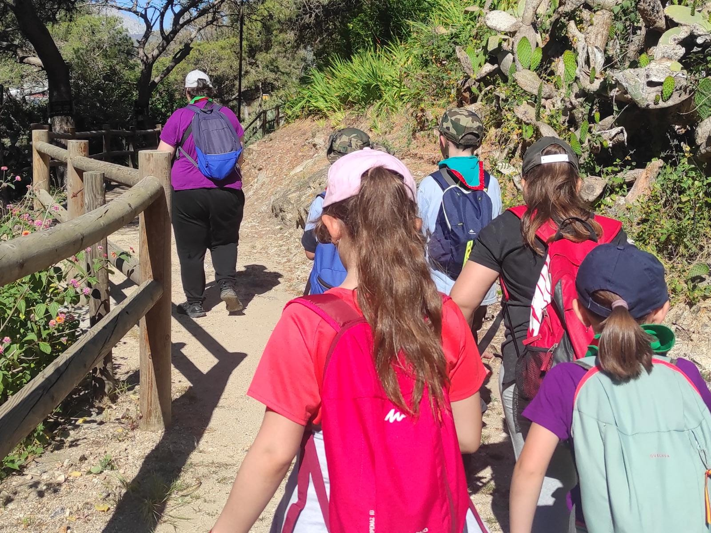

Nuestros grupos scout están abiertos a niñas, niños y jóvenes de entre 6 a 21 años. Gracias al método scout, nuestras educadoras, educadores y actividades se adaptan a las necesidades de cada edad. Utilizamos un programa educativo basado en la acción y en la propia experiencia, en la asunción paulatina de responsabilidades, en la participación en el proceso de la toma de decisiones, en pequeños grupos y en contacto con la naturaleza, que se desarrolla adaptado a las siguientes secciones educativas:
La Colonia de Castores comprende a los niños y niñas de 6 a 8 años. Es la edad de la máxima ilusión por descubrirlo todo. Es la primera vez que salen de casa y comienzan a acercarse a los demás. Contemplan con curiosidad todo lo que les rodea, desarrollando la creatividad. El lema “Compartir” fomenta la igualdad y la solidaridad entre ellos.
Tras su paso por la Colonia y al cumplir los 8 años, niños y niñas entran a formar parte de la Manada de Lobatos. Su imaginación está al servicio de una incesante actividad y del juego, su medio de aprender. Su compromiso es “Haremos lo mejor”. En el marco simbólico de “El Libro de las Tierras Vírgenes” de Rudyard Kipling, los lobatos y lobatas aprenden a crecer con la ayuda de sus “Viejos Lobos”. De nuevo es el desarrollo de la imaginación la que permite al educador hablar un lenguaje accesible para el niño.
Al alcanzar los once años llega el momento de entrar a formar parte de la Sección Scout. En esas edades (11 a 14 años) el deseo de aventura se hace más patente, se desarrolla el carácter, las actitudes y la capacidad de vivir en grupo, enriqueciéndose personalmente. En la Sección Scout se trabaja en Patrullas. La vida en Patrulla potencia el compromiso personal. Eligen sus propios líderes y programan las actividades, con apoyo de sus educadores. Los chicos y chicas adquieren así sus propias responsabilidades y aprenden a valorar el trabajo en equipo.
Cumplidos los 14 años, los chicos y chicas comienzan a trabajar en la Unidad Esculta/Pionera. Este es un momento crucial para las ideas, los interrogantes y las ambiciones. Los chicos y las chicas empiezan a perfilar su personalidad definitiva. El grupo cobra enorme importancia y se hacen hombres y mujeres activos. No aceptan el ocio pasivo y dirigido que se oferta a los jóvenes. Elaboran sus propios proyectos, abiertos al servicio comunitario, se abren a la sociedad y afianzan su pertenencia y su responsabilidad ciudadana. Conciben sus propios “proyectos de cambio”. Son ellos y ellas los verdaderos protagonistas de su futuro.
La Colonia de Castores comprende a los niños y niñas de 6 a 8 años. Es la edad de la máxima ilusión por descubrirlo todo. Es la primera vez que salen de casa y comienzan a acercarse a los demás. Contemplan con curiosidad todo lo que les rodea, desarrollando la creatividad. El lema “Compartir” fomenta la igualdad y la solidaridad entre ellos.
Las personas voluntarias de Scouts de España son personas jóvenes, en su mayoría, que creen en el Escultismo como método para formar en valores a través de la educación no formal, en el ámbito del tiempo libre. Dichas personas voluntarias, tienen a su cargo niñas, niños y adolescentes a los que educan en valores, en su tiempo libre, con sentido crítico y autonomía fomentando una escuela de ciudadanía en libertad. Son muchas y diversas las opciones y tareas que una persona voluntaria scout puede desarrollar en la Organización: - Educador/monitor en un grupo scout. - Actividades de coordinación y/o responsabilidad dentro del grupo scout.